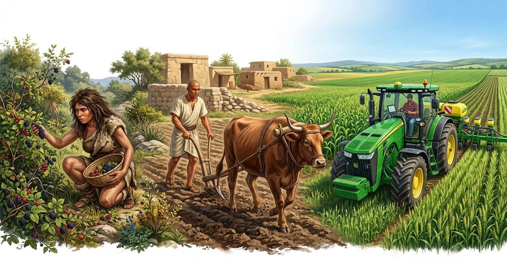
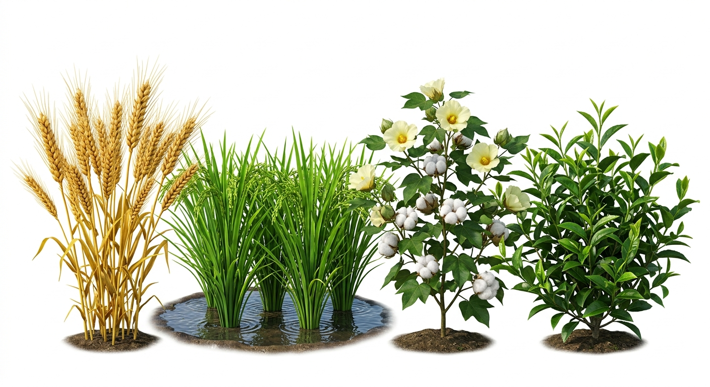

Food is the basic requirement of human beings for their survival. Earlier, human beings were entirely dependent upon food gathering, hunting, and fishing for their survival. Gradually, they started growing crops along the river valleys, which led to the beginning of agriculture. This shift helped ancient civilisations to flourish along the river valleys.
Concept
Agriculture: In simple terms, agriculture means cultivation of land. In wider terms, agriculture is the science and art of raising crops, rearing of livestock, forestry, and fishing.

Figure 1: Transition from Ancient to Modern Agriculture
Fact
Importance of Agriculture: Most of the population of the world still depends on agriculture for its livelihood, especially in developing countries. India is an agricultural country, making it the backbone of our country's economic development.
It supplies food to the people.
It creates a huge market for tractors, threshers, harvesters, fertilisers, pesticides, and other industrial products.
It helps in providing employment, eradicating poverty, enhancing trade, and earning foreign exchange.
2. Types of Farming
Farming is practiced in various ways across the world depending upon the geographical conditions, demand for produce, labour, and level of technology. It can be broadly classified into two main types:
A. Subsistence Farming
This type of farming is practiced to meet the needs of the farmer's family. Traditionally, low levels of technology and household labour are used to produce a small output. It includes:
Intensive Subsistence Agriculture: The farmer cultivates a small plot of land using simple tools and more labour. Climate with large numbers of days with sunshine and fertile soils permit growing of more than one crop annually on the same plot.
Primitive Subsistence Agriculture: Includes shifting cultivation (slash and burn agriculture) and nomadic herding.
B. Commercial Farming
In commercial farming, crops are grown and animals are reared for sale in the market. The area cultivated and the amount of capital used is large. Most of the work is done by machines. It includes:
Commercial Grain Farming: Crops are grown for commercial purpose (e.g., wheat and maize in North America).
Mixed Farming: The land is used for growing food and fodder crops and rearing livestock.
Plantation: A type of commercial farming where single crops of tea, coffee, sugarcane, cashew, rubber, banana, or cotton are grown. Large amount of labour and capital are required.
3. Major Crops
A large variety of crops are grown to meet the requirement of the growing population. Crops also supply raw materials for agro-based industries.

Figure 2: Classification of Major Agricultural Crops
Food Crops:
Rice: The major food crop of the world. Needs high temperature, high humidity, and rainfall. Grows best in alluvial clayey soil.
Wheat: Requires moderate temperature and rainfall during growing season, and bright sunshine at the time of harvest. Thrives best in well-drained loamy soil.
Fibre Crops:
Cotton: Requires high temperature, light rainfall, 210 frost-free days, and bright sunshine. Grows best on black and alluvial soils.
Jute: Also known as the 'Golden Fibre'. Grows well on alluvial soil and requires high temperature, heavy rainfall, and a humid climate.
Beverage Crops:
Tea: A beverage crop grown on plantations. Requires cool climate and well-distributed high rainfall throughout the year for the growth of its tender leaves. Needs well-drained loamy soils and gentle slopes.
Coffee: Requires warm and wet climate and well-drained loamy soil. Hill slopes are more suitable for growth.
4. Agricultural Development & Government Initiatives
Agricultural development refers to efforts made to increase farm production in order to meet the growing demand of an increasing population. This can be achieved in many ways such as increasing the cropped area, the number of crops grown, improving irrigation facilities, using fertilisers and high yielding variety of seeds.
Important
Government Initiatives for Farmers in India:
Today, farmers' welfare has become a focus to improve the conditions of the Indian farming system. There is a strong need to increase net income, reduce the cost of cultivation, and ensure remunerative prices. Important initiatives include:
Soil Health Card Scheme: Introduced to assess the nutrient levels available in the soil.
Neem-coated Urea: Promoted to regulate the use of urea and cut down its cost.
Paramparagat Krishi Vikas Yojna: Implemented to promote organic farming.
National Crop Insurance Scheme: Implemented to protect farmers from crop losses due to natural calamities.
Minimum Support Price (MSP): Introduced to eliminate the distress sale of agricultural produce by farmers.